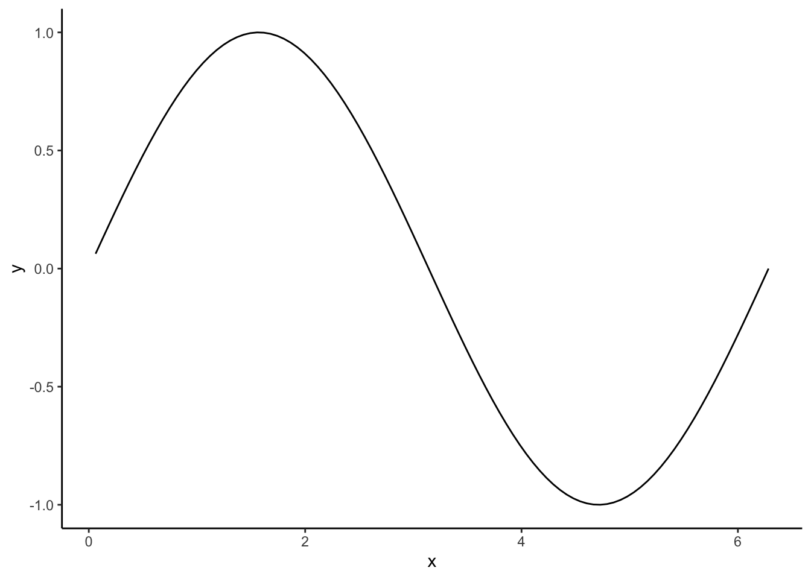

library(ggplot2)
library(dplyr)
logistic_map <- function(x0 = 0.2,
r = 3.65,
N = 100,
N_skip = 0) {
X <- rep(0, N)
if (N_skip > 0) {
#
# Iterate for N_trans generations without collecting data (only
# X[1] is updated, so the last data point will be
# used as the new X[1]).
#
X0 <- x0
for (t in 1:N_skip) {
X[1] <- X0 * (r - r * X0)
X0 <- X[1]
}
} else {
X0 <- x0
X[1] <- X0 * (r - r * X0)
}
# Iterate the coupled maps for N generations
for (t in 2:N) {
X[t] <- r * X[t - 1] * (1 - X[t - 1])
}
return(
data.frame(
time = 1:N,
X = X
)
)
}8 Convergent Cross Mapping
Convergent Cross Mapping (CCM) is a phase space-based method that aims to determine to what extent one time series, \(X\), has a causal influence on another time series, \(Y\), and vice versa.
CCM is based on the same phase space embedding as recurrence plot analyses, but it is not based on the concept of recurrence plots. Instead, CCM uses Takens’ theorem and the non-decomposability of nonlinear systems to get a measure of how much one part of the system (\(X\)) influences another part of the system (\(Y\)).
Before looking at CCM, let us first take a look at one of the model systems we will use to understand and apply CCM.
8.1 The logistic map
The logistic map is defined by the difference equation \[ X_{n+1} = r X_n (1 - X_{n}) \]
Let us start by generating a time series for a particular start value of \(X\) and a particular value of the growth parameter \(r\). This is done by calling the function logistic_map() which is defined below.
We can call this function with an initial value \(X_0\) and some value for the growth parameter or control parameter. If we do not set the number of points to generate and the number of points to skip (the transient phase) these parameters will have the default values defined in the function above.
time_series <- logistic_map(x0 = 0.3, r = 3.2)
ggplot(time_series,
aes(x = time, y = X)) +
geom_line() +
theme_classic()
Here, we see that the system is periodic with period 2, after a short initial period of transient behaviour.
We can choose a different value for the growth (control) parameter, \(r\).
time_series <- logistic_map(x0 = 0.3, r = 3.65)
ggplot(time_series,
aes(x = time, y = X)) +
geom_line() +
theme_classic()
Let us try to construct the bifurcation diagram, i.e., a plot of the asymptotic states as a function of the growth rate, \(r\).
The function get_stable_points() collects a number, N_plot, points that are approximations to the asymptotic values. The first 200 points are skipped, and then N_plot points are saved. The minimum (r_min) and maximum, r_max, \(r\)-values can be set, as well as the number of \(r\)-values to sample in the interval [r_min, r_max].
get_stable_points <- function(r_min = 2.75,
r_max = 4,
r_steps = 1200,
N_plot = 100) {
# number(N_r) and step size (dr) in r
dr <- (r_max - r_min) / r_steps
stable_points <- data.frame()
r_values <- seq(r_min, r_max, by = dr)
for (r in r_values) {
time_series <- logistic_map(x0 = 0.2, r = r, N = N_plot, N_skip = 200)
stable_points <- bind_rows(
stable_points,
data.frame(r = rep(r, N_plot),
X = time_series$X)
)
}
return(stable_points)
}Now we can use this function to generate the stable points and plot them. This may take a while, but should not take several minutes.
stable_points <- get_stable_points(r_steps = 2500, N_plot = 200)
# Retrieve the step size in r
r_values <- sort(unique(stable_points$r))
dr <- r_values[2] - r_values[1]
ggplot(stable_points,
aes(x = r, y = X)) +
geom_tile(width = dr, height = dr) +
theme_classic()
Let us zoom in on the interval from \(r = 3.8\) to \(r = 3.9\). To do this, we generate a new set of stable points in this interval of \(r\) values, so a little patience is required again.
stable_points <- get_stable_points(r_min = 3.8,
r_max = 3.9,
r_steps = 2500,
N_plot = 200)
# Retrieve the step size in r to set the size of tiles in plot
r_values <- sort(unique(stable_points$r))
dr <- r_values[2] - r_values[1]
ggplot(stable_points,
aes(x = r, y = X)) +
# geom_point(size = 0.1, stroke = 0, shape = ".") +
# Smallest points are too large, so we use tiles instead
geom_tile(width = dr, height = 10 * dr, fill = "black") +
theme_classic()
Here we see periodic behaviour with a period of three emerge around \(r \approx 3.83\) after being in a chaotic regime.
Question
Can you see examples of self-similarity?
8.1.1 NLM logo
If we want to reproduce the workshop logo, we have to change colors and remove axes, etc.
stable_points <- get_stable_points(r_min = "Set value here",
r_max = "set value here",
r_steps = "Set value here",
N_plot = "Set value here")
# Retrieve the step size in r to set the size of tiles in plot
r_values <- sort(unique(stable_points$r))
dr <- r_values[2] - r_values[1]
bg_colour <- "#2D6660"
fg_colour <- "white"
ggplot(stable_points |>
filter(X > "Set value here"),
aes(x = r, y = X)) +
geom_tile(width = dr, height = dr, fill = fg_colour) +
theme_void() +
theme(plot.background = element_rect(fill = bg_colour, colour = bg_colour))
# You can save the plot with this command
ggsave("NLM_logo.png", width = 10, height = 4)If you set the right values, you should get something similar to the plot below.

8.2 Model example: The coupled logistic map
A simple example of a nonlinear system with two variables is the coupled logistic map. The two variables \(X\) and \(Y\) have internal dynamics depending on the growth rates \(r_X\) and \(r_Y\). In addition there is interdependent dynamics modeled as a causal effect of \(X\) on \(Y\) depending on the coupling constant \(\beta_{YX}\) and a coupling in the inverse direction depending on \(\beta_{XY}\).
The model is expressed by these two equations: \[ X_{n+1} = X_n ( r_X - r_X X_{n} - \beta_{XY}Y_n) \]
\[ Y_{n+1} = Y_n ( r_Y - r_Y Y_{n} - \beta_{YX}X_n) \]
As for the simple logistic map, we will use a function to generate values by iterating the equations above that define the coupled logistic map.
coupled_logistic_map <- function(x0 = 0.2,
y0 = 0.6,
rx = 3.65,
ry = 3.8,
bxy = 0,
byx = 0.4,
N = 100,
N_skip = 0) {
X <- rep(0, N)
Y <- rep(0, N)
if (N_skip > 0) {
#
# Iterate for N_trans generations without collecting data (only
# X[1] and Y[1] are updated, so the last data point will be
# used as the new X[1] and Y[1]).
#
X0 <- x0
Y0 <- y0
for (t in 1:N_skip) {
X[1] <- X0 * (rx - rx * X0 - bxy * Y0)
Y[1] <- Y0 * (ry - ry * Y0 - byx * X0)
X0 <- X[1]
Y0 <- Y[1]
}
} else {
X0 <- x0
Y0 <- y0
X[1] <- X0 * (rx - rx * X0 - bxy * Y0)
Y[1] <- Y0 * (ry - ry * Y0 - byx * X0)
}
# Iterate the coupled maps for N generations
for (t in 2:N) {
X[t] <- X[t - 1] * (rx - rx * X[t - 1] - bxy * Y[t - 1])
Y[t] <- Y[t - 1] * (ry - ry * Y[t - 1] - byx * X[t - 1])
}
return(
data.frame(
time = 1:N,
X = X,
Y = Y
)
)
}8.2.1 Time series (hands on exercise 1)
The model is implemented in the function coupled_logistic_map which can generate time series of length N given initial values x0and y0 of the two variables and values for all the parameters in the model. To avoid transient and possible idiosyncratic dynamics in the beginning, an optional parameter N_skip can be set that will skip the first N_skip data points and then run the model for an additional N generations.
# Note the parameters here are not the exact ones used in the slides
time_series <- coupled_logistic_map(
x0 = 0.2,
y0 = 0.6,
rx = 3.65,
ry = 3.8,
bxy = 0,
byx = 0.4,
N = 1000,
N_skip = 300
)Here are plots of the first 40 values of \(X\) and \(Y\).
Note
These plots are slightly different from those in the slides, because the parameters are not exactly the same.
library(ggplot2)
ggplot(time_series, aes(x = time, y = X)) +
geom_point(colour = "blue") +
geom_line(colour = "blue") +
xlim(c(1, 40)) +
ylab("Population X") +
theme_classic()
ggplot(time_series, aes(x = time, y = Y)) +
geom_point(colour = "red") +
geom_line(colour = "red") +
xlim(c(1, 40)) +
ylab("Population Y") +
theme_classic()
8.2.2 Attractor reconstruction
Reconstruct attractors from \(X\) and \(Y\). Here you need to set the embedding dimension.
library(tseriesChaos)
library(dplyr)
# Construct attractors using tseriesChaos::embedd()
# Note: I use a negative sign for delay to match the plot in the slides.
# What happens if you have a positive sign instead?
# Set the embedding dimension here. What should it be?
dimension <- NA
delay <- 1
MX <- embedd(time_series$X, m = dimension, d = -delay)
MY <- embedd(time_series$Y, m = dimension, d = -delay)
# Change the column names
colnames(MX) <- c("t", "t_minus_delay")
colnames(MY) <- c("t", "t_minus_delay")We can then add a variable name and bind the two time series into a data frame, so that we can plot the result.
attractors <- rbind(
as.data.frame(MX) |> mutate(variable = "X"),
as.data.frame(MY) |> mutate(variable = "Y")
)
ggplot(attractors, aes(x = t, y = t_minus_delay, colour = variable)) +
geom_point() +
scale_color_manual(values = c("X" = "blue", "Y" = "red")) +
xlab("Value at time t") +
ylab("Value at time t-1") +
coord_fixed() +
theme_classic()You should get something similar to the plots below.

What did you discover?
What was the correct embedding dimension?
What happens if \(\beta_{XY} > 0\)?
8.2.3 Convergent cross mapping (hands-on exercise 2)
Use the CCM()function to calculate cross map skill.
Note
This function takes a while to run. If you wish to experiment, use a smaller library size, and/or smaller sample. To decrease noise, increase the sample size.
library(rEDM)
# Perform the cross mapping. This can take some time.
#
# Exercise: supply the libSizes argument to the CCM() function
#
# Hint: it has the form "min max step", can be generated like this:
lib_min <- NA # Insert value of minimum library size here
lib_max <- NA # Insert value of maximum library size here
lib_step <- NA # Insert value of step here. Not too small!
lib_sizes <- paste(lib_min, lib_max, lib_step)
model_ccm <- CCM(dataFrame = time_series,
E = dimension, tau = -delay, Tp = 0,
columns = "Y", target = "X",
libSizes = lib_sizes, sample = 20,
showPlot = TRUE)
# Make sure the data frame has valid names (no colons)
colnames(model_ccm) <- make.names(colnames(model_ccm))Since the CCM() function returns that data, we can also make our own plot.
library(tidyr)
library(latex2exp)
# Construct a long form version of the data
model_ccm_long <- model_ccm |>
rename(Y.MX = X.Y, X.MY = Y.X, L = LibSize) %>%
pivot_longer(cols = c("Y.MX", "X.MY"),
names_to = "Crossmap",
values_to = "Rho")
ggplot(model_ccm_long, aes(x = L, y = Rho, color = Crossmap)) +
geom_point(size = 1) +
geom_line() +
scale_color_manual(values = c("X.MY" = "blue", "Y.MX" = "red"),
aesthetics = c("colour", "fill"),
breaks = c("X.MY", "Y.MX"),
labels = c("Y xmap X", "X xmap Y")) +
ylab(TeX("$\\rho$")) +
theme_classic() +
theme(legend.position = "top")
What did you discover?
What an you conclude based on the plot?
Describe your observations and reasoning.
8.2.4 Fitting the convergence (hands-on exercise 3)
The first step is to fit the cross-mapping data to the function using nonlinear least squares regression. Unlike lineaer regression, there is no closed-form solution, so the regression equations are solved using a numerical iterative approach that is not guaranteed to converge on a solution.
You may therefore need to provide an initial guess that is not too far from the least squares solution.
ccm_fit_X <- nls(Rho ~ a * exp(-g * L) + r,
data = model_ccm_long |> filter(Crossmap == "X.MY"),
start = list(a = -0.5, g = 0.05, r = 0))
# summary(ccm_fit_X)
# Note: this model might not converge.
# If it fails, you can comment this out.
ccm_fit_Y <- nls(Rho ~ a * exp(-g * L) + r,
data = model_ccm_long |> filter(Crossmap == "Y.MX"),
start = list(a = -0.1, g = 0.05, r = 0))
# summary(ccm_fit_Y)# Extract the predictions. If a fit failed, you have to put a comment the line
model_ccm_long$fit <- NA
model_ccm_long$fit[model_ccm_long$Crossmap == "X.MY"] <- predict(ccm_fit_X)
model_ccm_long$fit[model_ccm_long$Crossmap == "Y.MX"] <- predict(ccm_fit_Y)
ggplot(model_ccm_long, aes(x = L, y = Rho, color = Crossmap)) +
geom_point(size = 1) +
geom_line(aes(x = L, y = fit)) +
scale_color_manual(values = c("X.MY" = "blue", "Y.MX" = "red"),
aesthetics = c("colour", "fill"),
breaks = c("X.MY", "Y.MX"),
labels = c("Y xmap X", "X xmap Y")) +
ylab(TeX("$\\rho$")) +
theme_classic() +
theme(legend.position = "top")
8.2.4.1 Causal network
In order to construct the causal network, we start by extracting the \(\rho\)-values from the fitted models. The broom package makes this a lot easier.
library(broom)
rho_X_to_Y <- broom::tidy(ccm_fit_X) |>
filter(term == "r") |>
select(estimate) |>
as.numeric()
# If the ccm_fit_Y model did not converge, replace this by zero
# rho_Y_to_X <- 0
rho_Y_to_X <- broom::tidy(ccm_fit_Y) |>
filter(term == "r") |>
select(estimate) |>
as.numeric()
# Construct a data frame that defines the network
rho_links <- data.frame(from = c("X", "Y"),
to = c("Y", "X"),
rho = c(rho_X_to_Y, rho_Y_to_X))Now we can use the extracted parameter estimates and use them to create a network plot of the assessed causal couplings.
library(igraph)
library(ggraph)
rho_graph <- rho_links %>%
graph_from_data_frame()
ggraph(rho_graph, layout = "fr") +
geom_edge_arc(aes(label = round(rho, 2)),
color = "darkgrey",
arrow = arrow(length = unit(4, 'mm')),
end_cap = circle(3, 'mm')) +
geom_edge_arc(aes(width = rho),
alpha = .25,
end_cap = circle(3, 'mm')) +
geom_node_point(aes(color = name), size = 5) +
geom_node_text(aes(label = name), repel = TRUE,
nudge_x = 0.05, nudge_y = 0.05) +
scale_color_manual(values = c("X" = "blue", "Y" = "red"),
aesthetics = c("colour", "fill")) +
theme_graph() +
theme(legend.position = "none")
8.3 Example using empirical data (hands-on exercise 4)
This section uses partial and down sampled data from a pilot experiment, where pairs of participants performed various tasks including speaking and moving together. The data are from an unpublished study by Fusaroli, Tylén & Mønster.
library(readr)
phys <- read_csv("https://tildeweb.au.dk/~au78495/physiology.csv",
show_col_types = FALSE)
# Make z-scores
phys$Resp1 <- scale(phys$Resp1)
phys$HR1 <- scale(phys$HR1)
phys$Resp2 <- scale(phys$Resp2)
phys$HR2 <- scale(phys$HR2)
# Produce a long form of the data with a Subject variable
phys_long <- phys %>%
pivot_longer(cols = c(Resp1, Resp2),
names_to = "Subject",
names_pattern = "Resp([0-9]+)",
values_to = "Resp") %>%
pivot_longer(cols = c(HR1, HR2),
names_to = "S2",
names_pattern = "HR([0-9]+)",
values_to = "HR") %>%
filter(Subject == S2) %>%
select(-S2)Here is a plot of part of the data.
ggplot(phys_long, aes(x = min, y = Resp)) +
geom_line(colour = "blue", na.rm = TRUE) +
geom_line(aes(x = min, y = HR), colour = "red", na.rm = TRUE) +
xlim(c(min(phys$min), 10)) +
ylab("Signal (z-score)") +
theme_classic() +
facet_wrap(.~ Subject)
8.3.1 Estimate embedding parameters
Try to find a single value of the time delay and embedding dimension that can be used for all four time series, i.e., respiration and heart rate for subject 1 and subject 2.
# library() # You may need to load some packages here
# Option 1: Use optimizeParam from the crqa package
param <- list(method = "crqa", metric = "euclidean",
maxlag = 20, radiusspan = 100, normalize = 0, rescale = 0,
mindiagline = 2, minvertline = 2, tw = 0, whiteline = FALSE,
recpt = FALSE , side = "both", datatype = "continuous",
fnnpercent = 10, typeami = "mindip")
# You need to put in some time series here
# embed_param <- crqa::optimizeParam(TS1, TS2,
# par = param)
# Option 2: Use mutualInformation and estimateEmbeddingDim from nonlinearTseries
# nonlinearTseries::mutualInformation() # Fill in the blanks
# nonlinearTseries::estimateEmbeddingDim() # Fill in the blanks
# Option 3: Use mutual and false.nearest from tseriesChaos
# Get the variable names, but drop the time variables.
var_names <- colnames(phys)[3:6]
# Calculate AMI for each variable and collect the results in a data frame
AMI <- data.frame()
for (v in var_names) {
v_ami <- tseriesChaos::mutual(phys[, v], lag.max = 20, plot = FALSE)
AMI <- rbind(AMI,
as.vector(v_ami) %>%
as.data.frame() %>%
mutate(var = v))
}
# Set column names and add time delay
colnames(AMI) <- c("ami", "var")
AMI <- AMI %>%
group_by(var) %>%
mutate(delay = row_number()) %>%
ungroup()
# Plot the results, so the delay can be estimated
ggplot(AMI, aes(x = delay, y = ami)) +
geom_line() +
geom_point() +
ylab("AMI") +
theme_classic() +
facet_wrap(.~ var, ncol = 2)
ggsave("Plots/physiology_ami.pdf",
width = 16, height = 10, units = "cm")
#
# Set the delay here
#
delay <- NA # Enter value
# Calculate FNN for each variable and collect the results in a data frame
FNN <- data.frame()
for (v in var_names) {
v_fnn <- tseriesChaos::false.nearest(series = phys[, v],
m = 15, d = delay, t = 1, eps = 1)
FNN <- rbind(FNN,
as.vector(v_fnn["total", ]) %>%
as.data.frame() %>%
mutate(var = v))
}
# Set column names and add time delay
colnames(FNN) <- c("fnn", "var")
FNN <- FNN %>%
group_by(var) %>%
mutate(m = row_number()) %>%
ungroup()
# Plot the results, so the embedding dimension can be estimated
ggplot(FNN, aes(x = m, y = fnn)) +
geom_line() +
geom_point() +
ylab("FNN") +
theme_classic() +
facet_wrap(.~ var, ncol = 2)
ggsave("Plots/physiology_fnn.pdf",
width = 16, height = 10, units = "cm")
#
# Set embedding dimension
#
dimen <- NA # Enter value8.3.2 Convergent cross mapping
Look at all pairwise cross mappings
# Generate all pairwise combinations of variables
variables <- c("Resp1", "HR1", "Resp2", "HR2")
combinations <- combn(variables, 2)
# Get the row numbers and add them as the first column as required by CCM
idx <- as.numeric(rownames(phys))
ccm_data <- cbind(time = idx, phys)
# Create an empty list to hold results
ccm_output_list <- list()
for (pair in 1:ncol(combinations)) {
ccm_out <- CCM(dataFrame = ccm_data, E = dimen, tau = -delay, Tp = 0,
columns = combinations[1, pair],
target = combinations[2, pair],
libSizes = "20 450 10", sample = 30,
showPlot = FALSE)
# Rename columns to valid R names
colnames(ccm_out) <- make.names(colnames(ccm_out))
ccm_output_list[[pair]] <- ccm_out
}
# Merge all the data frames in the list to a single data frame
ccm_all_pairs <- Reduce(function(x,y) merge(x = x, y = y, by = "LibSize"),
ccm_output_list)Create a long form version of the data for easier plotting.
ccm_results <- ccm_all_pairs %>%
rename(L = LibSize) %>%
pivot_longer(cols = -L,
names_to = "Crossmap",
values_to = "Rho")Make our own plot.
ggplot(ccm_results, aes(x = L, y = Rho)) +
geom_point(size = 1, colour = "grey") +
ylab(TeX("$\\rho$")) +
theme_classic() +
theme(legend.position = "top") +
facet_wrap(.~ Crossmap, ncol = 3)It should produce something similar to the plot below.

Fit all cross-mapped values to \(\rho(L)\) and gather the r-values (\(\rho_\infty\)) in a data frame.
ccm_results$fit <- NA
# To catch errors, put nls() call inside try()
model_list <- list()
for (xmap in unique(ccm_results$Crossmap)) {
model_fit <- try(
nls(Rho ~ a * exp(-g * L) + r,
data = ccm_results %>% filter(Crossmap == xmap),
start = list(a = -0.55, g = 0.05, r = 0.5)),
TRUE
)
if(class(model_fit) == "try-error") {
next
} else {
model_list[xmap] <- model_fit
}
}
# Now calculate model predictions and add them to ccm_results
for (xmap in names(model_list)) {
ccm_results$fit[ccm_results$Crossmap == xmap] <- model_list[[xmap]]$predict()
}Plot the fitted results
ggplot(ccm_results, aes(x = L, y = Rho)) +
geom_point(size = 1, colour = "grey") +
geom_line(aes(x = L, y = fit)) +
ylab(TeX("$\\rho$")) +
theme_classic() +
theme(legend.position = "top") +
facet_wrap(.~ Crossmap, ncol = 3)If all went well, you should get a plot like the one shown below.

Extract the fitted rho values and construct a data frame that defines the causal network.
# Construct a data frame that defines the network
rho_links <- data.frame(from = character(),
to = character(),
rho = numeric())
# Extract the variables involved in the cross mapping
# and the fitted rho at infinite library size.
# Note: causality goes opposite to cross map direction
# i.e., high rho X:Y means causal link from Y to X.
counter <- 0
row_list <- list()
for (xmap in names(model_list)) {
counter <- counter + 1
from_to <- strsplit(xmap, "\\.")[[1]]
from_value <- from_to[2]
to_value <- from_to[1]
rho_value <- as.numeric(model_list[[xmap]]$getPars()["r"])
row_list[[counter]] <- data.frame(from = from_value,
to = to_value,
rho = rho_value)
}
rho_links <- do.call(rbind, row_list)rho_graph <- rho_links |>
graph_from_data_frame()
ggraph(rho_graph, layout = "fr") +
geom_edge_arc(aes(label = round(rho, 2)),
color = "darkgrey",
arrow = arrow(length = unit(4, 'mm')),
end_cap = circle(3, 'mm')) +
geom_edge_arc(aes(width = rho),
alpha = .25,
end_cap = circle(3, 'mm')) +
geom_node_point(aes(color = name), size = 5) +
geom_node_text(aes(label = name), repel = TRUE,
nudge_x = 0.05, nudge_y = 0.05) +
theme_graph() +
theme(legend.position = "none")The resulting network graph might look something like this, but note that the layout can change a lot from time to time, so yours may look quite different, even with the same values.

Note that some variables, such as speaking and movement of the two subjects have been left out of the data for simplicity. Could these variables explain some of the observed high couplings between the two subjects?
Further reading and useful links
R package: rEDM
MATLAB code: xmap
G. Sugihara, R. May, H. Ye, C.-h. Hsieh, E. Deyle, M. Fogarty, S. Munch. (2012). Detecting causality in complex ecosystems Science, 338 (6106), 496-500, DOI:10.1126/science.1227079
Mønster, D., Fusaroli, R., Tylén, K., Roepstorff, A., & Sherson, J. F. (2017). Causal inference from noisy time-series data—Testing the Convergent Cross-Mapping algorithm in the presence of noise and external influence. Future Generation Computer Systems, 73, 52-62. DOI: 10.1016/j.future.2016.12.009